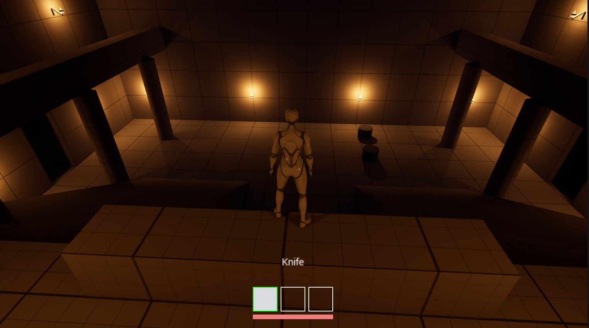
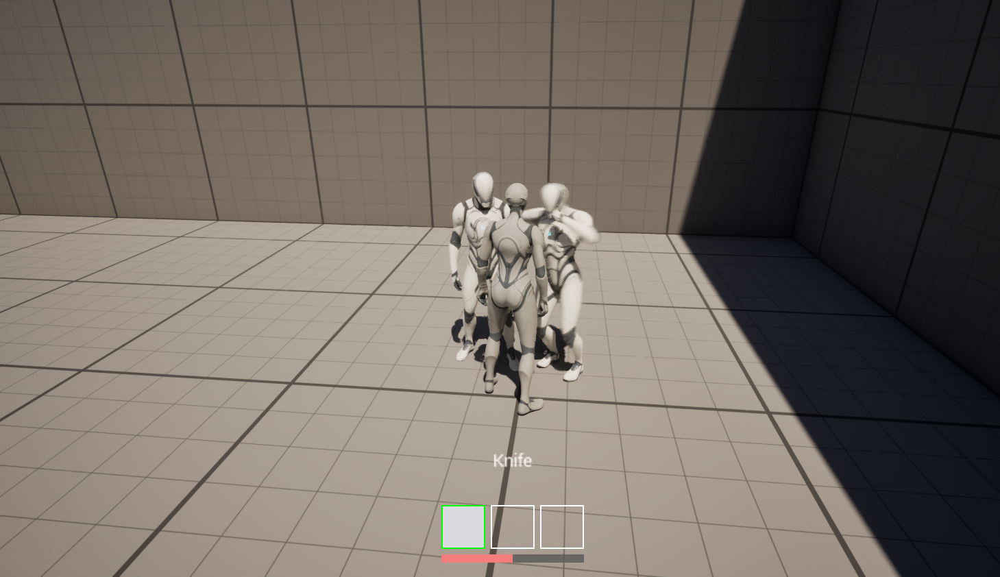
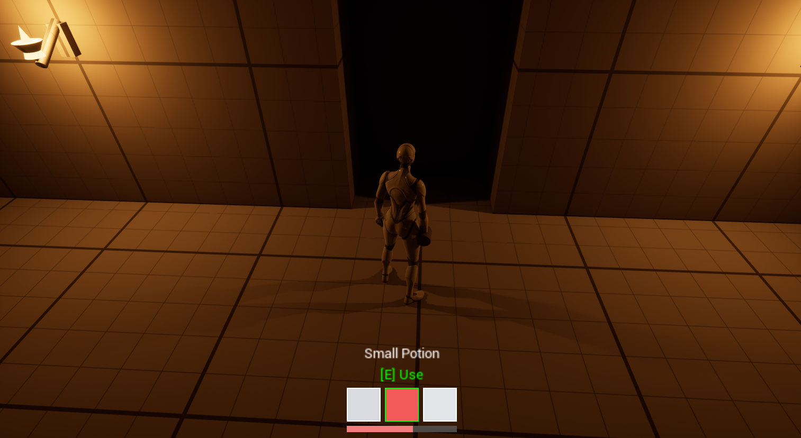
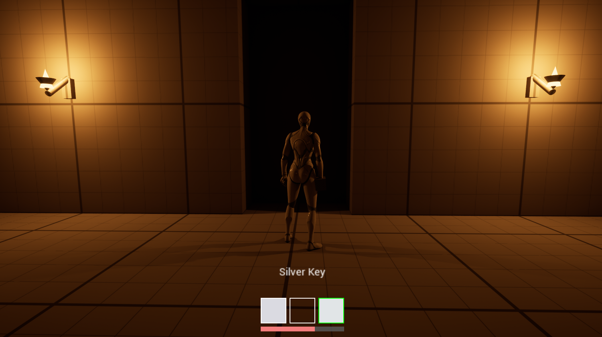
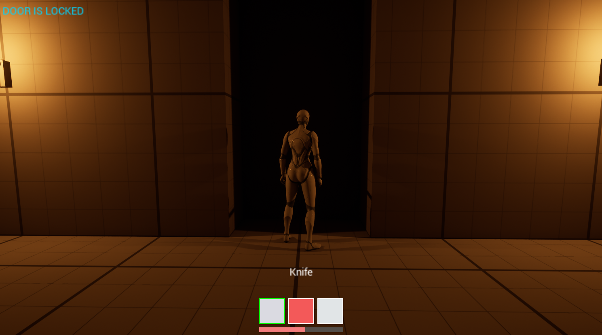
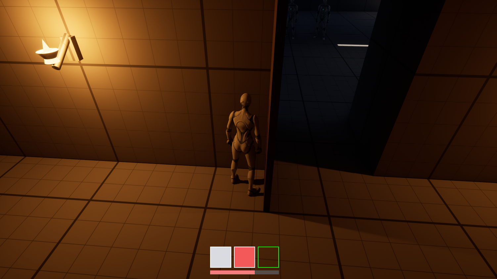

2025년에는 팀원이 막힌 자리에서, 2026년에는 AI 도구의 출력에서 — 남이 만든 것을 읽고 틀린 것을 잡는 일을 해왔다. 대상이 사람에서 도구로 바뀌었을 뿐이다.
| MCP1 — 중세 성 액션 방탈출 | 2026.08.27 ~ 09.04 · 9일 · 1인 · UE 5.8 | 아래 Project ICI를 AI 도구로 혼자 다시 만든 것 |
| Project ICI | 2025.06.23 ~ 09.11 · 9인 팀 · UE5 | 메인 기획 + 서브 프로그래밍. GameMode / GameState 전체 구현 |
커밋 116 · 블루프린트 클래스 10 · UE 엔진 소스 판독 60개 파일(결정이 바뀐 것 14건) · 구현 전에 고정한 사양과 합격 기준 12건
| 1 | 무엇을 만들었나 — T자 성 하나와 시스템 여덟. 그리고 데이터가 규칙을 만든다는 것 |
| 2 | AI 도구를 어떻게 운영했나 — AI가 명령문을 쓰고, 내가 실행하고 검증했다 |
| 3 | 추측을 금지하고 엔진 소스를 읽게 했다 — 판독이 결정을 바꾼 다섯 사례 |
| 4 | 도구가 "성공"이라고 말해도 믿지 않았다 — 어긋남을 잡은 방법 |
| 5 | Project ICI, 그리고 다시 만든 것 — 막힌 자리에 들어간 일과, 내 코드를 내가 진단한 일 |
| 6 | 지금 못하는 것과 채우는 순서 |
실제 게임 로직 구현은 블루프린트로 했다. C++ / C#은 기초 문법과 예제 수준이고, 프로젝트 규모로 작성한 경험이 없다.
이 프로젝트에서는 엔진 동작을 확정하기 위해 읽는 쪽으로 썼다. "블루프린트가 시킨 것"과 "엔진이 실제로 하는 것"이 어긋나는 자리를 두 번 만났고, 두 번째에는 소스에서 원인까지 갔다 (「그리고 2026년에 다시 만들었다」). C++을 읽을 수 있어야 하는 이유를 거기서 배웠다.
채우는 순서는 마지막 쪽에 적었다.
중세 성 액션 방탈출 · UE 5.8 · 1인 · 블루프린트 기반
로비에서 시작해 방 셋을 차례로 클리어한다. 방에 들어가면 문이 봉인되고, 그 안의 적을 전부 쓰러뜨려야 다음 방의 열쇠가 떨어진다. 셋을 다 열면 2층 최종 문이 열리고 엔딩 구역으로 간다. 방 안에서 죽으면 그 방만 초기화되고 로비에서 다시 시작한다.
조작은 이동 · 점프 · 시점 전환(V — 3인칭 ↔ 1인칭) · 습득(F) · 슬롯 선택(1/2/3) · 사용(E) · 버리기(Q) · 공격(LMB).
2025년 팀 프로젝트의 T자 성 구조를 UE 5.8에서 혼자 다시 짓고, 인벤토리 · 문과 열쇠 · 적 AI · 근접 전투 · 스테이지 진행 · 중세 조명까지 한 바퀴 돌려 처음부터 끝까지 플레이되는 상태로 만들었다.

Lvl_Stage원본 도면의 T자 구조를 옮겼다. World Partition + One File Per Actor.
방 2 · 10 × 8칸 | ||
|---|---|---|
방 1 · 9 × 8칸 | 로비 · 14 × 11칸∩자 2층 발코니 · 램프 2 · 기둥 6 | 방 3 · 10 × 8칸 |
진행은 로비 → 방 1(안 잠김) → 은열쇠로 방 2 → 동열쇠로 방 3이고, 셋을 다 클리어하면 2층 최종 문이 열려 엔딩 구역으로 간다.
전체 37 × 22칸(1칸 200). 벽은 하단 Z 0..200 · 상단 Z 200..400, 2층 벽 Z 400..1200, 발코니 걷는 면 Z 600, 램프 경사 31.0°. 지오메트리는 전부 큐브 · 램프 · 실린더를 늘린 것이다.
| 핵심 | |
|---|---|
| 인벤토리 | S_ItemDef 구조체 + E_ItemNature 열거형 + DT_Items 6행. 슬롯 3칸, 개수는 SlotCount 변수 하나. 선택이 곧 장착 |
| 상호작용·문 | BPI_Interact 인터페이스 하나. 문도 아이템도 같은 라인트레이스 한 경로. 상태 셋 — bLocked · bOpen · bSealed |
| 적 AI | BP_Enemy 한 클래스. 시야각 + 라인 오브 사이트로 벽 너머 감지 차단, 추격 · 복귀 · 방 소속 |
| 전투 | 몽타주 노티파이로 타격 창을 열고, 칼날/주먹이 지나간 궤적을 스윕 트레이스. 한 스윙에 같은 대상은 한 번만 |
| 진행 | BP_StageRoom이 자기 방의 적을 세고 열쇠를 떨군다. 방에 들어가면 문이 봉인되고, 그 안에서 죽으면 그 방만 초기화 |
| 플레이어 | V로 3인칭 ↔ 1인칭 전환(카메라를 head 본에). HP · 피격 · 사망 · 리스폰 |
| HUD | UMG 위젯을 하나도 안 만들었다. AHUD 캔버스로 슬롯 · HP 바 · 아이템 이름 · 프롬프트 · 안내 메시지를 전부 그림 |
| 아트 | 석재/목재 재질, 횃불 액터 BP_Torch 18개, 로비 천장. 기성 에셋 없이 기본 프리미티브로 조립 |

한 벌의 HUD 코드와 한 벌의 문 코드가, DataTable 행에 따라 다르게 동작한다. 아래 네 장은 같은 시스템의 서로 다른 입력이다.
 |  |
Small Potion — 칸이 빨강, [E] Use 표시 | Silver Key — 칸이 은회색, [E] Use 없음 |
 |  |
칼을 든 채 문 앞 → DOOR IS LOCKED. 3번 칸에 은열쇠가 그대로 있다 | 은열쇠를 선택하고 같은 문 → 열림. 3번 칸이 비었다 |
| 화면에 보이는 것 | 출처 |
|---|---|
Small Potion · Silver Key | DT_Items의 displayName |
| 칸의 빨강 · 은회색 | 같은 행의 iconColor. Silver Key는 (0.75, 0.78, 0.8) |
[E] Use가 뜨고 안 뜨는 것 | E_ItemNature — Consumable은 뜨고 Key는 안 뜬다 |
| 문이 열리고 안 열리는 것 | BP_Door.RequiredKey와 선택된 칸의 RowName 비교 |
| 열쇠가 사라진 것 | TryConsumeSelected가 칸을 비우고 RefreshHeldItem |
아래 두 장이 규칙 하나를 보여준다 — 가방에 열쇠가 있어도 선택하지 않으면 열리지 않는다. 좌하의 3번 칸에 은열쇠가 보이는데 잠겨 있고, 우하에서 그 칸을 선택하자 열리고 소비됐다.
| 2025 | 2026 |
|---|---|
아이템 한 종(열쇠), Item_Name 문자열 비교로 식별 | 6행 DataTable + RowName |
슬롯 2칸을 Switch on Int 0/1로 하드코딩 | SlotCount 변수 하나 |
문마다 전용 클래스(Stage2Door)가 GameMode를 직접 캐스팅 | BP_Door 한 클래스, RequiredKey를 인스턴스에서 지정 |
| 상호작용 경로 둘 (문=트레이스 / 아이템=오버랩) | 경로 하나 |
아이템을 한 종 늘리려면 2025년에는 코드를 고쳐야 했고, 지금은 행을 하나 추가하면 된다.
MCP 서버(unreal-mcp)로 에디터를 라이브 조작하는 환경이었지만, AI에게 에디터를 직접 맡기지 않았다. AI는 영어 명령문을 만들고, 나는 그것을 읽고 실행하고 결과를 확인했다.
이 분업은 처음부터 정한 게 아니라 한 번 실패하고 나서 정한 것이다.
도구가 에디터를 직접 편집하면 무엇이 바뀌었는지 화면에서 안 보인다. 명령문으로 받으면 실행 전에 읽을 수 있다. 그 한 번의 검토가 반복해서 값을 냈다.
| 명령문에 쓰여 있던 것 | 무엇이 틀렸나 |
|---|---|
| "미연결 이벤트 노드를 지우고 새로 추가하라" | 그 둘은 같은 노드였다 |
"DrawRect 12개를 수정하라" | 4개였다 |
IsValid를 순수 함수 + Branch로 배선 | 매크로 자체가 분기다 |
GetTextSize가 실행 핀을 가진다고 단정 | pure 노드라 실행 핀이 없다 |
보고 파일을 Saved/에 쓰라고 지시 | .gitignore에 걸려 사라진다 |
다섯 다 그대로 실행됐으면 전부 들어갔다. 왕복 비용은 내가 옆에 있어서 거의 0이었다.
명령문의 오류보다 비싼 것은 전제가 틀린 채로 다음 단계까지 가는 것이다. 두 번 있었다.
사양에 이런 합격 기준이 올라왔다.
PIE에서 적이 문간을 지나 플레이어를 쫓아온다.
읽어보니 게임에서 일어날 수 없는 상황이었다. 방에 들어가는 순간 BP_StageRoom이 문을 닫고 봉인하기 때문이다 — 그 봉인 규칙은 전날 내가 정해 넣은 것이었다.
그대로 갔으면 통과할 수 없는 기준으로 통과 여부를 판정했다. 기준을 게임에서 실제로 일어나는 상황으로 바꿔서 다시 지시했다.
E로 아이템을 손에 드는 토글을 전제한 질문이 올라왔다. 내가 생각한 건 그게 아니었다 — 칸을 고르는 것 자체가 장착이고 E는 소비다. 그렇게 짚고 나서야 모델이 확정됐다.
늦게 잡았으면 "손에 든 칸"을 따로 두는 구조를 먼저 만들고 버렸다.
심문 → 사양 → 명령 → 검증 → 기록앞 단계의 산출물이 없으면 다음으로 가지 않는다.
PIE에서 ___하면 ___가 된다. 검증은 이 문장들로만 하고, 여기 없는 것은 "확인 안 됨"이다새 노드·변수·블루프린트를 만들기 전에는 위에서부터 물었다 — 안 만들어도 되는가 → 프로젝트에 이미 있는가 → 엔진이 이미 주는가 → 플러그인이 주는가 → 노드 하나로 되는가. 대부분 세 번째에서 끝났다.
화면 붙여넣기는 터미널 폭에서 잘리고, 잘린 조각이 원문 행세를 한다.
작업 사흘째에 이 방식으로 바꿨다. 보완 호출이 명령당 5~10회에서 3회로 줄고 잘림이 사라졌다. 그리고 열흘째, 그 실패가 원문으로 다시 잡혔다 — 붙여넣은 보고가 문장 한복판에서 잘렸고 도구가 그것을 이렇게 짚었다.
Also worth naming: your message is a truncated fragment of my own previous
report — it stops mid-sentence at "A third".지금 보고서 56개 파일 · 35,101줄이 저장소에 있다.
두 규칙이 똑같은 이유로 조용히 사라졌다.
| 규칙 | 시작 | 끊긴 구간 | 원인 |
|---|---|---|---|
| 터미널 보고를 파일로 | 8/29 | 8/31 ~ 9/3 (다섯 세션) | 규칙 파일에 안 적혀 있었다 |
| 사양을 파일로 | 8/28 | 9/1 이후 | 규칙 파일에 안 적혀 있었다 |
도구는 사라진 줄도 몰랐다. 내가 "터미널 원문을 로그 파일로 따로 저장하기로 한 거 아니었어?"라고 물으면서 드러났다.
둘 다 관행으로만 존재했고, 새 세션은 규칙 파일을 읽지 폴더를 뒤지지 않는다. 끊긴 다섯 세션의 기록에는 "터미널 원문을 확보 못 했다"고만 적혀 있고 방법이 이미 있었다는 사실은 한 번도 안 적혔다.
9/3에 둘 다 규칙 파일에 넣었고, 끊긴 구간은 세션 로그에서 되찾아 저장소에 복구했다.
도구 문제도 엔진 문제도 아니었다. 규칙을 어디에 적어두느냐의 문제였다. 사람에게 구두로 전달한 규칙이 사라지는 것과 같고, AI에게는 더 빨리 사라진다.
UE 엔진 소스 약 60개 파일이 판단 근거로 남았고, 그중 결정이 바뀐 것이 14건이다
AI 도구가 만든 결과는 에디터에서 문제없이 돌아가도 기획 의도나 QA 기준에서 벗어날 수 있다. 그래서 작업을 시작할 때 규칙을 하나 걸었다 — 추측하지 말고 엔진 소스에서 확인할 것, 그리고 인용한 위치를 file:line으로 남길 것.
9일간 그 규칙으로 운영한 결과, UE 엔진 소스 약 60개 파일이 판단 근거로 기록에 남았다. 그중 읽고 나서 구현 결정이 실제로 바뀐 사례가 14건이다. 아래는 성격이 겹치지 않는 다섯이다.
이 판독은 AI 도구가 수행했고, 나는 그것을 규칙으로 강제하고 결과를 검증했다. 인용 위치는 모두 재확인 가능하며 아래 다섯은 설명할 수 있다.
인벤토리 HUD를 UMG 위젯으로 만들려 했다. 도구 목록에 UMG가 없었지만 그건 "도구에 없다"일 뿐 "만들 수 없다"의 근거는 아니었다.
읽은 곳 Runtime/UMG/Public/Blueprint/WidgetBlueprintGeneratedClass.h:90-92 · Runtime/Engine/Private/HUD.cpp:175-177, 642-656
WidgetTree가 UPROPERTY(DuplicateTransient)로 선언돼 Edit 플래그가 없다. 프로퍼티 경로로는 원천적으로 닿지 못한다.
결과 — UMG를 포기하고 AHUD 캔버스(DrawRect / DrawText)로 갔다. 슬롯 UI · HP 바 · 아이템 이름 · 안내 메시지를 위젯 계층 없이 전부 그렸다. 약한 근거로 포기했다면 나중에 다시 시도하며 시간을 버렸을 자리다.
적이 원위치로 복귀하는데 "도착" 판정이 나지 않아 제자리에서 멈추지 못했다. 블루프린트 그래프를 아무리 봐도 원인이 안 보였다.
읽은 곳 Runtime/AIModule/Private/Navigation/PathFollowingComponent.cpp:1328 · :136 · :159 · :125 / AISystem.cpp:28 / Tasks/AITask_MoveTo.cpp:21
const FVector::FReal UseRadius = RadiusThreshold + GoalRadius + (AgentRadius * AgentRadiusMultiplier);
// MinAgentRadiusPct = 1.1f; bReachTestIncludesAgentRadius = true;지정한 수용 반지름이 그대로 쓰이지 않고 에이전트 캡슐 반지름 × 1.1이 더해진다.
결과 — 원인을 확정하고 수정했다. 이건 "블루프린트가 시킨 것"과 "엔진이 실제로 하는 것" 사이의 틈이고, 소스를 읽기 전에는 알 방법이 없었다.
선택 슬롯 인덱스로 배열을 읽는 자리에 범위 검사를 넣을지 판단해야 했다.
읽은 곳 KismetArrayLibrary.cpp — GenericArray_Get
범위를 벗어나도 크래시하지 않고 경고를 남긴 뒤 기본값을 반환한다. 반환되는 빈 Name은 어떤 아이템 행 이름과도 같지 않으므로 실패 분기가 이미 성립한다.
결과 — 검사 노드를 만들지 않았다. 방어 코드를 넣는 것보다 안 넣는 근거를 대는 쪽이 어려웠고, 그 근거가 소스에 있었다.
자동화 도구로 배치한 액터가 디스크에 저장되지 않았다.
읽은 곳 LevelEditorActions.cpp:4367 · :568 → FileHelpers.cpp:4444-4453
저장 대상은 IsDirty() 또는 PKG_NewlyCreated인 패키지다. 새로 만든 액터의 패키지가 정확히 후자인데, 자동화 도구의 저장 경로는 그 조건을 타지 않는다.
결과 — 자동 저장을 포기하고 에디터의 Save Current Level로 넘겼다. "안 되네요"가 아니라 "이 한 줄 때문에 안 된다"까지 갔다.
BlueprintPure (C#)GetTextSize 헤더에 BlueprintPure가 없는 것을 보고 실행 핀이 있다고 판단해 배선 계획을 짰다. 그 판단이 틀렸다.
읽은 곳 Programs/Shared/EpicGames.UHT/Types/UhtFunction.cs:707 — UnrealHeaderTool은 C#으로 작성돼 있다.
const + 출력값이 있는 조건에서 UHT가 BlueprintPure를 자동으로 붙인다. 헤더의 지정자만으로 노드 모양을 단정할 수 없다.
결과 — 계획을 고쳤고, "헤더 한 줄을 보고 단정하지 않는다"를 이후 작업 규칙에 넣었다.
언어 경험 — 실제 게임 로직 구현은 블루프린트로 했고, C++ / C#은 기초 문법과 예제 수준이다. 이 프로젝트에서는 엔진 동작을 확정하기 위해 읽는 쪽으로 썼다. 위 다섯을 포함해 결정이 바뀐 판독 14건, 값·동작 확인 7건이 file:line과 함께 작업 기록에 남아 있다.
AI 출력과 실제 상태가 어긋난 것을 잡은 방법
AI 도구의 반환값은 작업이 됐다는 증거가 아니다. 이 프로젝트에서 그건 추측이 아니라 반복 관찰된 사실이고, 그래서 규칙을 하나 더 걸었다 —
응답을 성공 근거로 삼지 않는다. 에디터에서 실제 상태를 다시 읽는다.
MCP 서버(unreal-mcp)로 에디터를 조작하면서 기록한 것이다.
| 관찰 | 뜻 |
|---|---|
변수 추가 · 컴파일이 성공에 null | 성공과 실패를 반환값으로 못 가른다 |
프로퍼티 설정 · 저장이 항상 true | 하지 않은 쓰기도 true로 보고한다 |
컴포넌트 스케일 쓰기가 true를 주고 조용히 무시 | 성공 응답 뒤에 아무 일도 안 일어난다 |
가장 위험한 것은 따로 있다. 클래스 기본값(CDO)을 바꿔도 컴파일하지 않으면 런타임에 반영되지 않는다. 값을 읽으면 새 값이 나오는데 게임은 옛 값으로 돈다.
읽기로는 절대 못 잡는 어긋남이다. 초기에 UI가 화면에 안 뜬 원인이 정확히 이것이었고, "값이 맞는데 왜 안 되지"를 한참 헤맨 뒤에야 원인을 찾았다.
어느 명령의 결과라고 받은 보고가, 사실 직전 명령의 결과가 다시 붙여진 것이었다. 그 명령은 아예 실행되지 않았다.
근거 셋으로 잡았다.
보고를 그대로 믿었으면 없는 작업을 있다고 판단하고 다음 단계로 갔다. 그 뒤의 모든 작업이 잘못된 전제 위에 쌓였을 것이다.
블루프린트 그래프를 텍스트로 읽는 도구에 사각지대가 둘 있다.
그래서 읽은 것을 그대로 되쓰면 체인이 사라진다. 컴파일 에러도 안 난다.
읽기로도 못 믿을 것이 하나 더 있다 — 이미 연결된 핀도 value에 옛 리터럴을 들고 있다. 값만 보고 감사하면 틀린 결론에 간다. 연결 목록을 따로 봐야 한다.
그래서 그래프를 통째로 되쓰는 명령을 한 번도 쓰지 않았다. 항상 부분 수정만 지시했다.
횃불 18개를 만든 날 화면으로 확인하지 않았다. 다음 날 처음 PIE로 봤고, 문제 셋이 한꺼번에 나왔다 — 자기 그림자로 형태가 깨진 것, 불꽃이 파묻힌 것, 윗면 색.
셋 다 에디터 뷰포트에서는 안 보이던 것이다. 자기 그림자와 발광 재질은 플레이 화면의 시점과 노출에서만 드러난다. 도구는 "토치 18개를 배치했다"까지만 말해줬고, 그 응답에는 틀린 것이 하나도 없었다.
"만들었다"와 "확인했다"는 다른 사건이다. 도구가 아무리 빨라도 이 간격은 안 줄어든다.
구현 전에 사양에 써둔 합격 기준(「AI가 명령문을 쓰고, 내가 실행하고 검증했다」)으로만 검증했다. 거기 없는 것은 "확인 안 됨"이다.
초기 어느 세션의 기록에는 이렇게 적혀 있다.
합격 기준 4개 중 통과한 것은 없다.
되는 척하면 다음 세션이 그 위에 쌓는다. 확인 못 한 것은 확인 못 했다고 적었다.
에디터에서 멀쩡해 보이는 것과 실제로 그런 것은 다르다. 그 둘을 가르는 것이 이 절차의 목적이었고, 위 다섯이 실제로 갈라낸 자리다.
2025.06.23 ~ 09.11 · 9인 팀 · UE5 · 1인칭 액션 방탈출 역할: 메인 기획 + 서브 프로그래밍
참여자 대부분이 첫 프로젝트였고, 나는 프로젝트 경험이 있는 쪽이었다. 그래서 기획만 하고 끝나지 않았다. 진행이 막힌 자리에 들어가는 것이 내 역할이 됐다.
스테이지 진행 전체를 맡았다.
| 함수 | 하는 일 |
|---|---|
Stage 1/2/3 Spawn | 현재 Stage에 맞는 Tag를 지정 → 그 Tag를 가진 TargetPoint를 배열로 수집 → 각 Transform 자리에 적 AI를 Spawn → Current Enemy 증가 |
Count Enemy | 소환된 적마다 Bind On Destroyed로 할당. 죽을 때 Remain Enemy 감소 |
Drop Key | Remain Enemy가 0이 되면 마지막 적의 위치를 가져와 그 자리에 현재 Stage의 열쇠를 생성 |
Reset Current Stage | 진행 중 사망 시 — 문 잠금 초기화, 소환된 적 전부 파괴, Spawn Trigger Box 재배치, 열쇠 정보 초기화, GameState 값 초기화 |
Add Current Stage / End Stage | 클리어 후 문 개방 → Stage 증가 → 플레이어 상태 회복 |
GameState는 "값이 고유하거나 변하지 않는, 판단의 근거가 되는 것"만 담도록 분리했다. Stage 진행 중 판단에 쓰이는 변수와 Boolean이 여기 있고, GameMode가 가져다 썼다.
그 외에 플레이어 로직, 열쇠로 여닫는 문과 상호작용, 인벤토리 UI 표기 (선택 슬롯 테두리 강조, 습득 시 Item_Icon 텍스처 교체)도 직접 만들었다.
팀원이 기획서를 보고 적 AI를 구현하다가 막혔다. 증상은 이랬다.
상태가 바뀌는데 애니메이션이 동작하지 않는다. 다음 동작으로 안 넘어간다.
같이 화면을 보면서 고쳤다. 답은 새 기능을 붙이는 게 아니라 상태를 더 쪼개고, 구간마다 "무엇이 참일 때 다음으로 넘어가는가"를 명시하는 것이었다.
그 작업의 결과가 기획서에 남아 있다.
대기(Idle) → 순찰 : 기본 상태에서 특정 거리를 이동하며 일대를 순찰
순찰 → 추적 : 플레이어 발견
추적 → 대기 : 플레이어가 시야에서 사라짐 (추적 종료)
대기/순찰 → 추적 : 플레이어에게 공격받음 (바라보며 추적)
추적 → 공격 : 공격 가능 거리 도달
공격 → 공격 대기 : 다음 공격까지 딜레이
추적/공격 → 후퇴 : 체력 25% 미만. 맞은 시점의 플레이어 반대 방향으로공격 판정도 같이 정했다 — 무기 끝 부분에 트리거 범위를 두고, 그 범위가 플레이어와 충돌했을 때만 데미지를 계산한다. 공격 딜레이는 애니메이션 길이로 조절하고, 공격 가능 거리는 무기를 휘두르는 범위에 맞춰 조절한다.
MCP1은 이 프로젝트를 UE 5.8에서 혼자 다시 만든 것이다. 그래서 내가 진단한 대상은 남의 코드가 아니라 내가 짰던 코드다.
내 2025년 코드의 가장 큰 문제는 개수가 데이터가 아니라 코드에 있었다는 것이다.
| 2025 · 내가 짠 것 | 2026 · MCP1 |
|---|---|
Stage 1/2/3 Spawn 함수 3벌 | BP_StageRoom 한 클래스. 방이 자기 적을 센다 |
Is Stage N Clear? Boolean 3개 | ClearedRooms 정수 하나 |
Reset Current Stage가 Switch On Int로 3벌 | ResetRoom 하나 |
Drop Key가 스테이지별 열쇠를 하드 지정 | KeyToDrop 인스턴스 변수 |
Count Enemy를 Bind On Destroyed로 연결 | 적이 죽을 때 방에 직접 호출 |
소환한 적을 Get All Actors Of Class로 재탐색 | EnemySpawns 배열을 방이 보유 |
방을 넷으로 늘리려면 2025년 코드는 네 곳을 고쳐야 하고, MCP1은 액터를 하나 놓으면 된다.
기획서에 있던 규칙 하나는 그대로 옮겼다 — "체력 오버 시 로비로 리스폰 후 해당 방 초기화 및 다시 진행 가능 상태." MCP1에서 BP_StageRoom.ResetRoom과 NotifyPlayerDied가 정확히 그 규칙이다.
2026년에 적이 원위치로 복귀하는데 도착 판정이 안 나서 멈추지 못하는 버그를 만났다. 증상이 2025년에 팀원이 막혔던 것과 같은 계열이었다 — 다음으로 안 넘어간다.
다른 점은 접근이었다.
PathFollowingComponent.cpp:1328에서 수용 반지름에 에이전트 캡슐 반지름 × 1.1이 더해진다는 것, 그리고 이동 노드가 래턴트라 실행 핀을 물고 있는 동안 그 뒤의 모든 판정이 정지한다는 것두 버그 다 블루프린트 그래프를 아무리 봐도 안 보인다. "블루프린트가 시킨 것"과 "엔진이 실제로 하는 것" 사이의 틈이었다.
C++을 읽을 수 있어야 하는 이유를 이 두 번으로 배웠다. 2025년에는 증상을 우회했고, 2026년에는 원인까지 갔다.
상태를 쪼개고 전이 조건을 다는 일은 언어와 무관하다. 2025년에 팀원이 막힌 자리에서 한 일과, 2026년에 AI 도구의 출력을 검증하며 한 일이 같은 일이었다. 대상이 사람에서 도구로 바뀌었을 뿐이다.
실제 게임 로직 구현은 블루프린트로 했다. C++ / C#은 기초 문법과 예제 수준이고, 프로젝트 규모로 작성한 경험이 없다.
이 프로젝트에서는 엔진 동작을 확정하기 위해 읽는 쪽으로 썼다 — UE 엔진 소스 약 60개 파일이 판단 근거로 기록에 남아 있고, 그중 읽고 나서 구현 결정이 바뀐 것이 14건이다 (「추측을 금지하고 엔진 소스를 인용하게 했다」).
| 무엇 | 왜 이 순서인가 | 언제 | |
|---|---|---|---|
| 1 | 판독 14건을 설명 가능한 수준으로 | 재료가 이미 저장소에 있다. 가장 싸고 가장 먼저 검증받을 자리다 | 제출 직후 |
| 2 | 블루프린트 하나를 C++로 이식 — BP_EndTrigger(오버랩 하나) → BP_Torch(컴포넌트 조립) → BP_Door(상태 셋 + 회전) | 이 프로젝트는 순수 블루프린트라 C++ 모듈 자체가 없다. 모듈을 얹고 빌드를 통과시키는 것이 첫 관문이라, 로직이 거의 없는 클래스로 그걸 먼저 넘는다 | 기술 면접 전 |
| 3 | 자료구조 · 알고리즘 | 위 둘이 "읽고 옮기는" 능력이라면 이건 별개다 | 지속 |
2번을 작은 것부터 잡은 이유 — 마감 사흘 전에 모듈을 추가하는 것은 빌드 도구 · 첫 컴파일 시간 · 프로젝트 파손이 한꺼번에 붙는 도박이라 하지 않았다. 할 수 있는데 안 한 게 아니라, 지금 하면 안 되는 순서라고 판단했다.
제출 시점에 남아 있는 것들이다. 원인과 대응까지 정해져 있고 시간을 못 낸 것이다.
| 무엇 | 원인 | 대응 |
|---|---|---|
| 방 셋에 천장이 없어 문 너머로 하늘이 보인다 | 로비만 천장을 덮었다 | 큐브 셋으로 덮는다. 덮으면 캄캄해지므로 방마다 횃불 6~8개가 같이 필요하다 |
| 로비 중앙이 어둡다 | 광원 감쇠 반경 1200이 로비 2200 × 2800에 부족 | 노출 고정 → 반경·강도 → 램프 옆 횃불 추가 순으로 |
| HUD 안내 메시지가 시안색이라 톤과 안 맞는다 | ColorMessage 초기값 | 값 하나 |
| 스태미나와 달리기가 없다 | 2025년 기획서에 있던 시스템인데 구현 순서에서 밀렸다 | 초당 소모율 × 델타로. 원본은 타이머로 깎아서 타이머 간격이 바뀌면 소모 속도가 통째로 바뀌었다 |
| 연출이 통째로 없다 — 사망 · 피격 리액션 · 적 체력바 | 판정을 먼저 만들고 연출을 뒤로 미뤘다 | 사망은 카메라 전환 · 페이드 · 몽타주를 값 하나로 묶는다 |
이 문서의 근거는 전부 저장소에 있다 — 구현 전에 고정한 사양 12건(Docs/Spec/), 세션별 작업 기록 25건(Docs/AI-Log/), 명령 실행 보고 원문 56건(Docs/Terminal-Log/), 2025년 프로젝트와의 구현 대조(Docs/ProjectICI5.8/), 그리고 작업 규칙을 적은 CLAUDE.md.